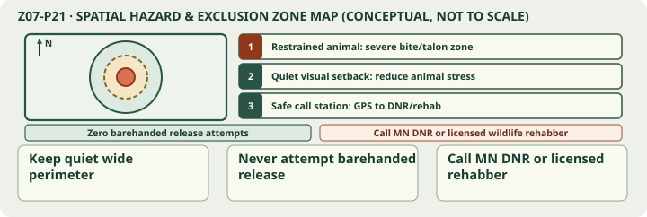

Z07-P21 · Traps and snares · New manuscript
Safe Response to an Accidentally Trapped Wild Animal
Protect both human rescuers and distressed wildlife by contacting Conservation Officers or licensed rehabilitators instead of attempting barehanded release.
When it applies · Discovering a live trapped, entangled, or injured wild animal in the field.
Equipment · Phone/GPS for authority call; keep pets and group far back.

Actions
- Stop immediately, leash pets tightly, and back away quietly because human proximity spikes panic, exhaustion, and self-injury in a restrained wild animal.[L06]
- Do not approach, handle the animal, or manipulate any device. Keep pets and other people away while an authorized responder gives instructions.[L06, L09]
- Record exact GPS coordinates, species description if safely visible from afar, and visible injury status, then call Minnesota DNR Conservation Officers or a DNR-licensed wildlife rehabilitator.[L06]
Failure recognition · Rushing in to pry open hardware on a panicked wild carnivore or raptor causes severe lacerations, rabies post-exposure treatment, and worse animal injury.[L06, M17]
Verify · Wide quiet perimeter is maintained, zero barehanded contact occurs, and wildlife authorities receive exact GPS coordinates.[L06]
Stop or change course · Stop approaching immediately; seek urgent medical care and report to public health if any wild mammal bite or saliva-scratch exposure occurs.[L06, M17]
Evidence and editorial notes
- L06 · Minnesota DNR · Injured, Orphaned, or Trapped Wildlife Reporting (Current web edition)
- Section: Reporting injured, orphaned, or accidentally trapped wildlife · Conditions: Discovering a trapped or injured wild animal in the field
Support: Maintain safe distance to avoid bites, rabies, and stress to the animal; note GPS/location and contact a Conservation Officer or licensed wildlife rehabilitator.
Limitations: Never attempt barehanded release of distressed carnivores, raptors, or large mammals. · Conflicting evidence: None noted.
Editorial note: Establishes Z07 incidental-capture reporting protocol. · Specialist reviewer: Wildlife rehabilitator and DNR officer
Primary source · checked 2026-11-25 - L09 · Minnesota DNR · Turn In Poachers (TIP) and Conservation Officer Reporting (Current web edition)
- Section: Reporting illegal, unmarked, or abandoned traps and snares · Conditions: Encountering suspected unlawful, out-of-season, or unsafe sets
Support: Do not touch, spring, or steal equipment; photograph from a safe distance with location coordinates and report to MN DNR TIP or local law enforcement.
Limitations: Tampering with lawful traps can be illegal and risks severe hand injury from stored spring energy. · Conflicting evidence: None noted.
Editorial note: Protects bystanders from injury and legal liability. · Specialist reviewer: Conservation enforcement reviewer
Primary source · checked 2026-11-25 - M17 · NIH / MedlinePlus · Dehydration (current web edition)
- Section: Dehydration Recognition, Oral Rehydration, and Red Flags · Conditions: Heat exertion, prolonged diarrhea, vomiting, or inadequate water intake
Support: Encourage small frequent sips of safe potable water or labeled oral rehydration solution in alert patients able to swallow; evacuate urgently for confusion, inability to keep fluids down, sunken eyes, or minimal dark urine.
Limitations: Severely dehydrated or altered patients cannot safely rehydrate by mouth alone. · Conflicting evidence: None; avoids unverified homemade salt-sugar ratio guesswork when labeled packets exist.
Editorial note: Links hydration monitoring to medical evacuation triggers. · Specialist reviewer: Wilderness medicine and internal medicine
Primary source · checked 2026-11-24
Source lineage · New manuscript (Z07 P18 authority referral) · Classification · New manuscript.